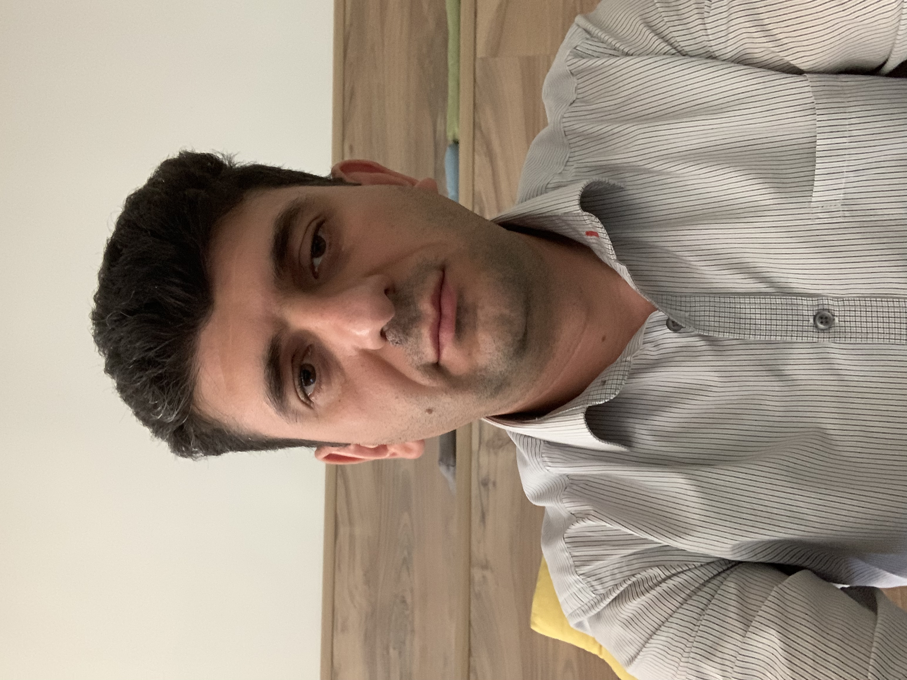

About me
Hello, I'm
Mkrtich Gevorgyan
I was born in 1983, in Gyumri, Armenia
Languages
Armenian: native
English: so-so
Contacts
Phone: +374 93237272
E-mail: mkrtichgevorgian@gmail.com
Air-mail: 6 Mar st. apt. 39, Yerevan
0090, Armenia
Job
- 2019 - till now
- Resarcher at Alikhanyan National Science Laboratory
- 2011 - 2014
- Technical support administrator at "Hi-teck Getway"
- 2008 - 2019
- Junior resarcher at Byurakan Astrophysical Observatory
Background
- 2024 Feb -
- Javascrypt Profession at ACA
- 2023 Nov - 2024 Jan
- Introduction to Javascrypt at ACA
- 2007 - 2009
- Master's degree at YSU faculty of Physics
- 2001 - 2005
- Bacholar's degree at YSU faculty of Physics
- 1990 - 2000
- Secondary school #9, Gyumri Armenia
Hobby